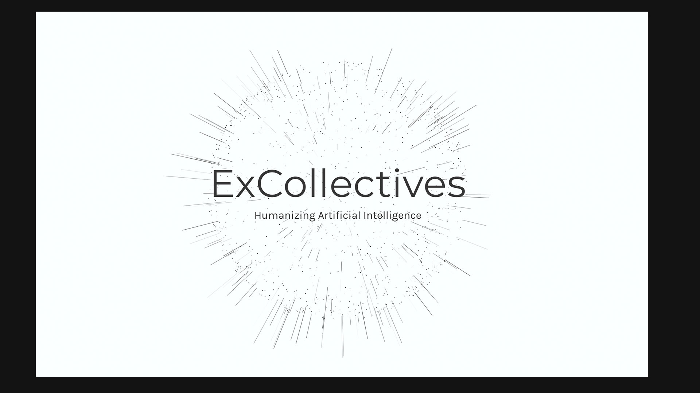
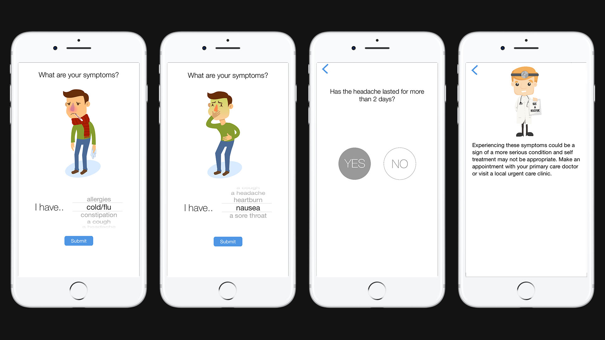
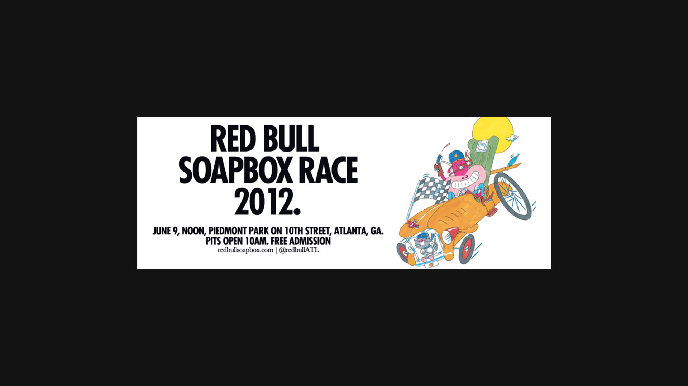

Research the system
AI behavior, user context, workflows, health/product logic, and the questions a tool needs to answer before it earns trust.
This is who I am right now
I work where AI research, software engineering, and design meet. My focus now is building AI-native tools and interfaces that are technically serious, visually clear, and human enough to trust.
Interdisciplinary, not scattered
The through-line is not that I do unrelated things. It is that I use different disciplines to solve the same kind of problem: how to make complex systems understandable, useful, and emotionally legible.
AI behavior, user context, workflows, health/product logic, and the questions a tool needs to answer before it earns trust.
Front-end engineering, prototypes, interaction models, product architecture, and coded experiments that make the idea testable.
Interface design, visual systems, motion, story, and image-making so the product has clarity instead of just functionality.
Current proof points
These are the projects that best connect where I have been with where I am going.

Early work on conversational AI, assistant behavior, health tracking, and mobile product systems.
Open case study
Healthcare UX using characters, motion, and visual feedback to make difficult decisions feel less cold.
Open case studyA browser instrument that makes code feel tactile, cinematic, and playable.
Open case studyArchive: what I have done
The archive is intentionally lower in the hierarchy. It shows the range that shaped the current practice: music, film, photography, brand, product, culture, health, and software.

Artist funding platform, product design, launch films, and SXSW-facing storytelling.

Prototype lab for health tools, collaboration systems, hardware, and research experiments.

Label identity, artist campaigns, event graphics, and media artifacts.

Collaboration platforms, music media guidance, culture events, and large-format work.

Album artwork, type, grain, and late-night release atmosphere.

Identity, packaging, photography direction, and experiential storytelling.
The simple version
The archive explains the range. The current direction is focused: AI-native tools, agentic interfaces, creative software, and human systems that need both technical depth and taste.
Read more about the practice